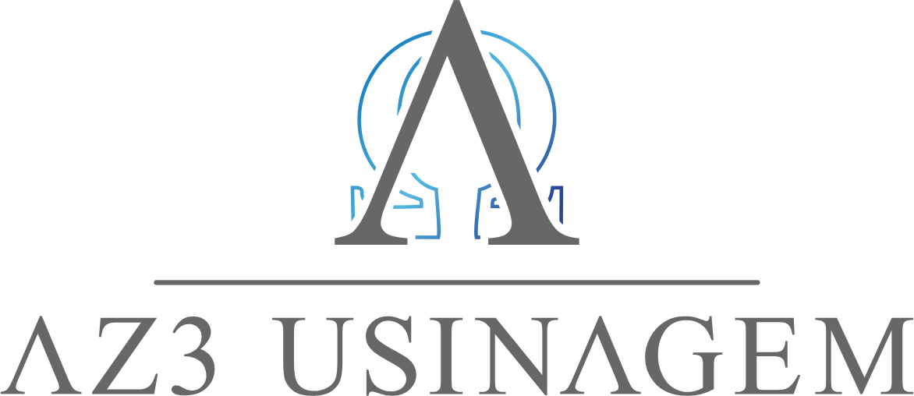
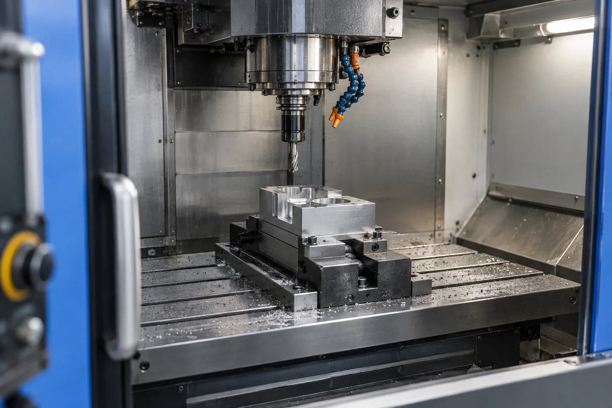

Exemplo ilustrativo
Eixos e encaixes
Diâmetros diferentes para diferentes funções no conjunto.
O que mostrar neste trabalho
Foto da peça real, aplicação, material e medidas relevantes. Dados a fornecer pela AZ3.

Por dentro da peça.
Da matéria-prima ao detalhe que faz a peça funcionar. Conheça o caminho de uma solução em usinagem.
Acompanhar a transformaçãoVídeo de referência, não é a fábrica da AZ3.
Daniel Smyth / Pexels
01 / A transformação
Existe um caminho entre o material e a aplicação. Explore as etapas para entender o que muda.
Antes de fabricar
Aplicação, desenho, material e quantidade ajudam a definir o que será feito. Aqui, um bloco simples representa a matéria-prima.
02 / O trabalho
Selecione uma operação e veja o que ela faz. Os serviços efetivamente oferecidos serão confirmados com a AZ3.
Uma ferramenta de corte remove material para formar superfícies, canais ou cavidades.
03 / A estrutura
Um espaço para mostrar os equipamentos, as ferramentas e os cuidados que fazem parte do trabalho.

Nesta área entram imagens reais dos equipamentos da AZ3 e uma explicação simples do que cada um permite fabricar.
O inventário real será fornecido pela empresa antes de finalizar os textos.
04 / O resultado
Forma, encaixe e aplicação em primeiro plano. Este espaço será preenchido com trabalhos reais da AZ3.
3 exemplos exibidos
Diâmetros diferentes para diferentes funções no conjunto.
Foto da peça real, aplicação, material e medidas relevantes. Dados a fornecer pela AZ3.
Superfícies e furos que aproximam as partes de uma montagem.
Foto da peça real, sua função na montagem e os pontos de atenção do projeto. Conteúdo a validar.
Cavidades, furações e faces organizadas para uma aplicação.
O desafio original, a peça pronta e sua aplicação. Não há case ou resultado comercial confirmado neste estudo.
O próximo trabalho começa aqui
Um desenho, uma peça de reposição ou uma demanda de produção. Comece pelo que você já tem.
Material, quantidade e aplicação ajudam na primeira avaliação.
Demonstração do caminho de contato.
Este é um wireframe. O contato comercial será conectado após a validação. Nenhuma mensagem foi enviada.